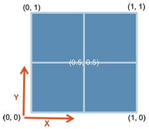

Combining plots
Workshop on ggplot
Lokesh Mano • 12-Aug-2020
In this chapter, we will mainly focus on making a “publication-type” figure, with sub-plots and such using different tools in R. There are many different ways/packages to do this, but we will mainly focus on 2 packages: cowplot and ggpubr.
Now let us consider some of the plots we have made so far in the previous exercises. From the picture below, A and B are the figures that was made from the gene counts dataset and the figures C and D are using the Sepal.Length and Sepal.Width from the iris data. Now let us look into how we can combine each of the figures like it is shown here.

Now, let us go step by step. First let us make these plots into R objects. This will make things a lot easier.
p1 <- gc_long %>%
group_by(Time, Replicate) %>%
summarise(mean=mean(log10(count +1)),se=se(log10(count +1))) %>%
ggplot(aes(x= Time, y= mean, fill = Replicate)) +
geom_bar(position = position_dodge2(), stat = "identity") +
geom_errorbar(aes(ymin=mean-se, ymax=mean+se), position = position_dodge2(.9, padding = .6)) +
ylab("mean(log10(count+1))") +
theme(axis.ticks = element_blank()) +
theme_bw(base_size = 10)
p2 <- ggplot(data = gc_long) +
geom_boxplot(mapping = aes(x = Sample_Name, y = log10(count + 1), fill = Replicate)) +
facet_grid(~Time , scales = "free", space = "free") +
xlab("Time") +
theme_bw(base_size = 10) +
theme(axis.ticks.x = element_blank(), axis.text.x = element_blank())
p3 <- ggplot(data=iris,mapping=aes(x=Sepal.Length))+
geom_density(aes(fill = Species), alpha = 0.6) +
theme_light(base_size = 10)
p4 <- ggplot(data=iris,mapping=aes(x=Sepal.Length, y = Sepal.Width, color = Species)) +
geom_point(size = 3, alpha = 0.6) +
theme_light(base_size = 10)The objects p1, p2, p3 and p4 as intuitively represent the plots A, B, C and D repectively.
1 Cowplot
1.1 plot_grid
One can use the simple plot_grid() function from the cowplot.

You can also do some simple customizations using nrow or ncol to specify the number of rows and columns and provide labels to those plots as well.

1.2 ggdraw and draw_plot
In cowplot, you can also customize the dimentions of the plots in a much more controlled fashion. For this one starts with ggdraw() which initiates the drawing “canvas” followed by draw_plot() that you use to draw the different plots on to the canvas.
Here is how the dimentions of the empty canvas looks like: 
From here, you can draw your plots in the way you want using these dimensions. AN example is shown below, where we plot C and D similar to the plot above:
ggdraw() +
draw_plot(p3, x = 0, y = 0, width = 1, height = .5) +
draw_plot(p4, x = 0, y = .5, width = 1, height = .5) plot
You can also add “labels” to these figures using draw_plot_label() with the same dimensions.
ggdraw() +
draw_plot(p3, x = 0, y = 0.5, width = 1, height = .5) +
draw_plot(p4, x = 0, y = 0, width = 1, height = .5) +
draw_plot_label(label = c("A", "B"), size = 15, x = c(0,0), y = c(1, 0.5))plot
It is easier to draw three (or any odd number) plots in a neat way using this function compared to plot_grid()

2 ggpubr
2.1 ggarrange
The package ggpubr comes with quite a few functions that can be very useful to make comprehensive figures. To start with the simple function, let’s start with ggarrange() that is used to put plots together.
One of the nicer things with ggarrange() is that you can automatically have common legends that are shared between the figures.
2.2 Mixing text and table with Figures
You can include tables and even normal texts to any figure using ggtexttable() and ggparagraph(). Let us look into adding a table that we saw in the previous exercise with the gene counts dataset.
gc_table <- gc_long %>%
group_by(Time) %>%
summarise(mean=mean(log10(count +1)),se=se(log10(count +1)))
tab1 <- ggtexttable(gc_table, rows = NULL,
theme = ttheme("mOrange"))
gc_text <- paste("In the experiment, RNA was extracted at four time points:",
"before the gefinitib treatment (t=0), and two, six and twenty-four hours",
"after treatment (t=2, t=6, t=24, respectively).", sep = " ")
tex1 <- ggparagraph(text = gc_text, face = "italic", size = 11, color = "black") Note Here, for the text part, paste() has been used just to make it a bit easier to show here in the code. It could be used without the paste() command as well.

2.3 Multiple-page
With ggarrange() it is also possible to make multiple-page plots. If you are for example making a report of many different figures this can come quite handy. Then you can use ggexport() to export these figures in a multi-page pdf.
Note From this multi.page R object (which is of class list) , you can get the indivdual plots by multi.page[[1]], multi.page[[2]] and so on.
3 Exercise
Task For the exercise in this session, let us look into way of using the tools available for combining plots to make one plot that could be very comprehensive. Try to code the figure below:
plot
Tip: 1 Within ggarrange(), it is possible to adjust the dimension of each plot with widths and heights options.
Tip: 2 You can plot an empty plot with NULL.
4 Session info
## R version 3.6.3 (2020-02-29)
## Platform: x86_64-pc-linux-gnu (64-bit)
## Running under: Ubuntu 20.04.1 LTS
##
## Matrix products: default
## BLAS: /usr/lib/x86_64-linux-gnu/blas/libblas.so.3.9.0
## LAPACK: /usr/lib/x86_64-linux-gnu/lapack/liblapack.so.3.9.0
##
## locale:
## [1] LC_CTYPE=en_US.UTF-8 LC_NUMERIC=C
## [3] LC_TIME=en_US.UTF-8 LC_COLLATE=en_US.UTF-8
## [5] LC_MONETARY=en_US.UTF-8 LC_MESSAGES=en_US.UTF-8
## [7] LC_PAPER=en_US.UTF-8 LC_NAME=C
## [9] LC_ADDRESS=C LC_TELEPHONE=C
## [11] LC_MEASUREMENT=en_US.UTF-8 LC_IDENTIFICATION=C
##
## attached base packages:
## [1] stats graphics grDevices utils datasets methods base
##
## other attached packages:
## [1] ggpubr_0.4.0 cowplot_1.0.0 forcats_0.5.0 stringr_1.4.0
## [5] purrr_0.3.4 readr_1.3.1 tidyr_1.1.1 tibble_3.0.3
## [9] tidyverse_1.3.0 reshape2_1.4.4 ggplot2_3.3.2 dplyr_1.0.1
## [13] captioner_2.2.3 bookdown_0.20 knitr_1.29
##
## loaded via a namespace (and not attached):
## [1] Rcpp_1.0.5 lubridate_1.7.9 assertthat_0.2.1 digest_0.6.25
## [5] R6_2.4.1 cellranger_1.1.0 plyr_1.8.6 backports_1.1.8
## [9] reprex_0.3.0 evaluate_0.14 httr_1.4.2 pillar_1.4.6
## [13] rlang_0.4.7 curl_4.3 readxl_1.3.1 rstudioapi_0.11
## [17] data.table_1.13.0 car_3.0-8 blob_1.2.1 rmarkdown_2.3
## [21] labeling_0.3 foreign_0.8-75 munsell_0.5.0 broom_0.7.0
## [25] compiler_3.6.3 modelr_0.1.8 xfun_0.16 pkgconfig_2.0.3
## [29] htmltools_0.5.0 tidyselect_1.1.0 gridExtra_2.3 rio_0.5.16
## [33] fansi_0.4.1 crayon_1.3.4 dbplyr_1.4.4 withr_2.2.0
## [37] grid_3.6.3 jsonlite_1.7.0 gtable_0.3.0 lifecycle_0.2.0
## [41] DBI_1.1.0 magrittr_1.5 scales_1.1.1 zip_2.0.4
## [45] carData_3.0-4 cli_2.0.2 stringi_1.4.6 farver_2.0.3
## [49] ggsignif_0.6.0 fs_1.5.0 xml2_1.3.2 ellipsis_0.3.1
## [53] generics_0.0.2 vctrs_0.3.2 openxlsx_4.1.5 tools_3.6.3
## [57] glue_1.4.1 hms_0.5.3 abind_1.4-5 yaml_2.2.1
## [61] colorspace_1.4-1 rstatix_0.6.0 rvest_0.3.6 haven_2.3.1End of document